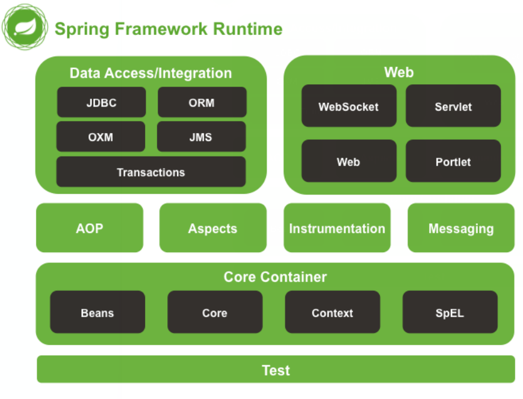
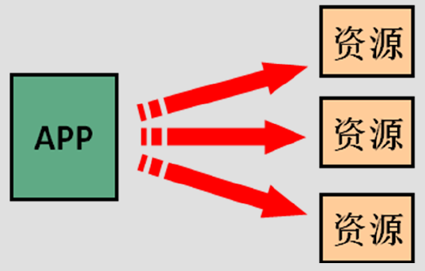
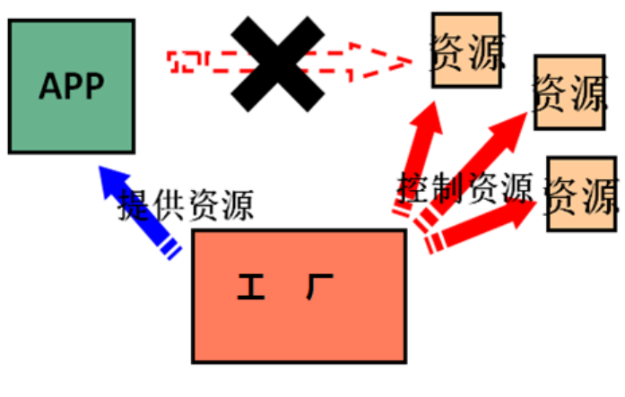

Spring 是分层的 Java SE/EE 应用 full-stack 轻量级开源框架,以 IoC(Inverse Of Control:反转控制)和 AOP(Aspect Oriented Programming:面向切面编程)为内核,提供了展现层 SpringMVC 和持久层 Spring JDBC 以及业务层事务管理等众多的企业级应用技术,还能整合开源世界众多著名的第三方框架和类库,逐渐成为使用最多的 Java EE 企业应用开源框架。
spring 概述
spring 是什么
Spring 是分层的 Java SE/EE 应用 full-stack 轻量级开源框架,以 IoC(Inverse Of Control:反转控制)和 AOP(Aspect Oriented Programming:面向切面编程)为内核,提供了展现层 SpringMVC 和持久层 Spring JDBC 以及业务层事务管理等众多的企业级应用技术,还能整合开源世界众多著名的第三方框架和类库,逐渐成为使用最多的 Java EE 企业应用开源框架。
Spring 的发展历程
1997 年 IBM 提出了 EJB 的思想
1998 年,SUN 制定开发标准规范 EJB1.0
1999 年,EJB1.1 发布
2001 年,EJB2.0 发布
2003 年,EJB2.1 发布
2006 年,EJB3.0 发布
Rod Johnson(spring 之父)
Expert One-to-One J2EE Design and Development(2002)
阐述了 J2EE 使用 EJB 开发设计的优点及解决方案
Expert One-to-One J2EE Development without EJB(2004)
阐述了 J2EE 开发不使用 EJB 的解决方式(Spring 雏形)
2017 年 9 月份发布了 spring 的最新版本 spring 5.0 通用版(GA)
spring 的优势
方便解耦,简化开发
通过 Spring 提供的 IoC 容器,可以将对象间的依赖关系交由 Spring 进行控制,避免硬编码所造成的过度程序耦合。用户也不必再为单例模式类、属性文件解析等这些很底层的需求编写代码,可以更专注于上层的应用。
AOP 编程的支持
通过 Spring 的 AOP 功能,方便进行面向切面的编程,许多不容易用传统 OOP 实现的功能可以通过 AOP 轻松应付。
声明式事务的支持
可以将我们从单调烦闷的事务管理代码中解脱出来,通过声明式方式灵活的进行事务的管理,提高开发效率和质量。
方便程序的测试
可以用非容器依赖的编程方式进行几乎所有的测试工作,测试不再是昂贵的操作,而是随手可做的事情。
方便集成各种优秀框架
Spring 可以降低各种框架的使用难度,提供了对各种优秀框架(Struts、 Hibernate、 Hessian、 Quartz等)的直接支持。
降低 JavaEE API 的使用难度
Spring 对 JavaEE API(如 JDBC、JavaMail、远程调用等)进行了薄薄的封装层,使这些 API 的使用难度大为降低。
Java 源码是经典学习范例
Spring 的源代码设计精妙、结构清晰、匠心独用,处处体现着大师对 Java 设计模式灵活运用以及对 Java 技术的高深造诣。它的源代码无意是 Java 技术的最佳实践的范例。
spring 的体系结构

IoC 的概念和作用
程序的耦合和解耦
什么是程序的耦合
耦合性(Coupling),也叫耦合度,是对模块间关联程度的度量。耦合的强弱取决于模块间接口的复杂性、调用模块的方式以及通过界面传送数据的多少。模块间的耦合度是指模块之间的依赖关系,包括控制关系、调用关系、数据传递关系。模块间联系越多,其耦合性越强,同时表明其独立性越差 ( 降低耦合性,可以提高其独立性)。耦合性存在于各个领域,而非软件设计中独有的,但是我们只讨论软件工程中的耦合。
在软件工程中,耦合指的就是就是对象之间的依赖性。对象之间的耦合越高,维护成本越高。因此对象的设计应使类和构件之间的耦合最小。软件设计中通常用耦合度和内聚度作为衡量模块独立程度的标准。划分模块的一个准则就是高内聚低耦合。
它有如下分类:
(1) 内容耦合。当一个模块直接修改或操作另一个模块的数据时,或一个模块不通过正常入口而转入另一个模块时,这样的耦合被称为内容耦合。内容耦合是最高程度的耦合,应该避免使用之。
(2) 公共耦合。两个或两个以上的模块共同引用一个全局数据项,这种耦合被称为公共耦合。在具有大量公共耦合的结构中,确定究竟是哪个模块给全局变量赋了一个特定的值是十分困难的。
(3) 外部耦合 。一组模块都访问同一全局简单变量而不是同一全局数据结构,而且不是通过参数表传递该全局变量的信息,则称之为外部耦合。
(4) 控制耦合 。一个模块通过接口向另一个模块传递一个控制信号,接受信号的模块根据信号值而进行适当的动作,这种耦合被称为控制耦合。
(5) 标记耦合 。若一个模块 A 通过接口向两个模块 B 和 C 传递一个公共参数,那么称模块 B 和 C 之间存在一个标记耦合。
(6) 数据耦合。模块之间通过参数来传递数据,那么被称为数据耦合。数据耦合是最低的一种耦合形式,系统中一般都存在这种类型的耦合,因为为了完成一些有意义的功能,往往需要将某些模块的输出数据作为另一些模块的输入数据。
(7) 非直接耦合 。两个模块之间没有直接关系,它们之间的联系完全是通过主模块的控制和调用来实现的。
总结:
耦合是影响软件复杂程度和设计质量的一个重要因素,在设计上我们应采用以下原则:如果模块间必须存在耦合,就尽量使用数据耦合,少用控制耦合,限制公共耦合的范围,尽量避免使用内容耦合。
内聚与耦合
内聚标志一个模块内各个元素彼此结合的紧密程度,它是信息隐蔽和局部化概念的自然扩展。内聚是从功能角度来度量模块内的联系,一个好的内聚模块应当恰好做一件事。它描述的是模块内的功能联系。耦合是软件结构中各模块之间相互连接的一种度量,耦合强弱取决于模块间接口的复杂程度、进入或访问一个模块的点以及通过接口的数据。 程序讲究的是低耦合,高内聚。就是同一个模块内的各个元素之间要高度紧密,但是各个模块之间的相互依存度却要不那么紧密。
内聚和耦合是密切相关的,同其他模块存在高耦合的模块意味着低内聚,而高内聚的模块意味着该模块同其他模块之间是低耦合。在进行软件设计时,应力争做到高内聚,低耦合。
怎么看待耦合
耦合：程序间的依赖关系
包括：
类之间的依赖
方法间的依赖
解耦：降低程序间的依赖关系
实际开发中应该：编译期不依赖，运行时才依赖。
解耦的思路：
第一步：使用反射来创建对象，而避免使用new关键字。
第二步：通过读取配置文件来获取要创建的对象全限定类名
耦合无处不在
我们在开发中,有些依赖关系是必须的,有些依赖关系可以通过优化代码来解除的。
请看下面的示例代码:
/**
* 账户的业务层实现类
* @Version 1.0
*/
public class AccountServiceImpl implements IAccountService {
private IAccountDao accountDao = new AccountDaoImpl();
}
业务层调用持久层,并且此时业务层在依赖持久层的接口和实现类。如果此时没有持久层实现类,编译将不能通过。这种编译期依赖关系,应该在我们开发中杜绝。我们需要优化代码解决。
再比如:
早期我们的 JDBC 操作,注册驱动时,我们为什么不使用 DriverManager 的 register 方法,而是采用 Class.forName 的方式?
public class JdbcDemo1 {
/**
* @param args
* @throws Exception
*/
public static void main(String[] args) throws Exception {
//1.注册驱动
//DriverManager.registerDriver(new com.mysql.jdbc.Driver());
Class.forName("com.mysql.jdbc.Driver");
//2.获取连接
//3.获取预处理 sql 语句对象
//4.获取结果集
//5.遍历结果集
}
}
原因就是:
我们的类依赖了数据库的具体驱动类(MySQL),如果这时候更换了数据库品牌(比如 Oracle),需要修改源码来重新数据库驱动。这显然不是我们想要的。
解耦的思路
当是我们讲解 jdbc 时,是通过反射来注册驱动的,代码如下:Class.forName("com.mysql.jdbc.Driver");//此处只是一个字符串
此时的好处是,我们的类中不再依赖具体的驱动类,此时就算删除 mysql 的驱动 jar 包,依然可以编译(运行就不要想了,没有驱动不可能运行成功的)。
同时,也产生了一个新的问题,mysql 驱动的全限定类名字符串是在 java 类中写死的,一旦要改还是要修改源码。
解决这个问题也很简单,使用配置文件配置。
解耦的案例
耦合的产生
package uestc.zhangkx.dao;
/**
* 账户的持久层接口
*/
public interface IAccountDao {
/**
* 模拟保存账户
*/
void saveAccount();
}
--------------------------------------------
package uestc.zhangkx.service;
/**
* 账户业务层的接口
*/
public interface IAccountService {
/**
* 模拟保存账户
*/
void saveAccount();
}
--------------------------------------------
package uestc.zhangkx.service.impl;
import uestc.zhangkx.dao.IAccountDao;
import uestc.zhangkx.service.IAccountService;
/**
* 账户的业务层实现类
*/
public class AccountServiceImpl implements IAccountService {
private IAccountDao accountDao = new AccountDaoImpl();
public void saveAccount(){
accountDao.saveAccount();
}
}
-------------------------------------------
package uestc.zhangkx.ui;
import uestc.zhangkx.service.IAccountService;
/**
* 模拟一个表现层，用于调用业务层
*/
public class Client {
public static void main(String[] args) {
IAccountService as = new AccountServiceImpl();
}
}
上述代码中有大量的耦合，各个方法之间相互依赖，耦合度极大。得想办法解耦。根据解耦的思路，我们可以使用工厂解耦！
建立工厂
Bean:可重用的组件
javabean：用java语言编写的可重用组件
javabean>实体类
我们可以创建BeanFactory来创建dao和service对象！
步骤和前文的思路一致：
第一步：需要一个配置文件来配置我们的service和dao
配置的内容：唯一标志 = 全限定名
第二步：通过配置文件配置的内容来反射创建对象
在这里，配置文件可以用xml写（我不熟悉，今后再学习），也可以用properties写（选这个）。
直接建立bean.properties:
accountService=uestc.zhangkx.service.impl.AccountServiceImpl
accountDao=uestc.zhangkx.dao.impl.AccountDaoImpl
再建立工厂：
package uestc.zhangkx.factory;
import java.io.InputStream;
import java.util.Enumeration;
import java.util.HashMap;
import java.util.Map;
import java.util.Properties;
public class BeanFactory {
//定义一个Properties对象
private static Properties props;
//使用静态代码块为Properties对象赋值
static {
try {
//实例化对象
props = new Properties();
InputStream in = BeanFactory.class.getClassLoader().getResourceAsStream("bean.properties");
props.load(in);
}catch(Exception e){
throw new ExceptionInInitializerError("初始化properties失败！");
}
}
public static Object getBean(String beanName){
Object bean = null;
try{
String beanPath = props.getProperty(beanName);
bean = Class.forName(beanPath).newInstance();
}catch (Exception e){
e.printStackTrace();
}
return bean;
}
}
改造业务层、表现层
业务层
//private IAccountDao accountDao = new AccountDaoImpl();
private IAccountDao accountDao = (IAccountDao)BeanFactory.getBean("accountDao");
-------------------------------------------
表现层
//IAccountService as = new AccountServiceImpl();
private IAccountService as = (IAccountService) BeanFactory.getBean("accountService");
代码已经解耦，但还是有缺陷。创建的bean是多例的。多例性能低，想把反法成为单例的。
改造工厂
package uestc.zhangkx.factory;
import java.io.InputStream;
import java.util.Enumeration;
import java.util.HashMap;
import java.util.Map;
import java.util.Properties;
public class BeanFactory {
//定义一个Properties对象
private static Properties props;
//定义一个Map,用于存放我们要创建的对象。我们把它称之为容器
private static Map<String,Object> beans;
//使用静态代码块为Properties对象赋值
static {
try {
//实例化对象
props = new Properties();
//获取properties文件的流对象
InputStream in = BeanFactory.class.getClassLoader().getResourceAsStream("bean.properties");
props.load(in);
//实例化容器
beans = new HashMap<String,Object>();
//取出配置文件中所有的Key
Enumeration keys = props.keys();
//遍历枚举
while (keys.hasMoreElements()){
//取出每个Key
String key = keys.nextElement().toString();
//根据key获取value
String beanPath = props.getProperty(key);
//反射创建对象
Object value = Class.forName(beanPath).newInstance();
//把key和value存入容器中
beans.put(key,value);
}
}catch(Exception e){
throw new ExceptionInInitializerError("初始化properties失败！");
}
}
/**
* 根据bean的名称获取对象
* @param beanName
* @return
*/
public static Object getBean(String beanName){
return beans.get(beanName);
}
/**
* 根据Bean的名称获取bean对象
* @param beanName
* @return
public static Object getBean(String beanName){
Object bean = null;
try {
String beanPath = props.getProperty(beanName);
// System.out.println(beanPath);
bean = Class.forName(beanPath).newInstance();//每次都会调用默认构造函数创建对象
}catch (Exception e){
e.printStackTrace();
}
return bean;
}*/
}
工厂模式解耦
在实际开发中我们可以把三层的对象都使用配置文件配置起来,当启动服务器应用加载的时候,让一个类中的方法通过读取配置文件,把这些对象创建出来并存起来。在接下来的使用的时候,直接拿过来用就好了。那么,这个读取配置文件,创建和获取三层对象的类就是工厂。
控制反转-Inversion Of Control
解耦的思路有 2 个问题:
1、存哪去?
分析:由于我们是很多对象,肯定要找个集合来存。这时候有 Map 和 List 供选择。
到底选 Map 还是 List 就看我们有没有查找需求。有查找需求,选 Map。
所以我们的答案就是
在应用加载时,创建一个 Map,用于存放三层对象。我们把这个 map 称之为容器。
2、什么是工厂?
工厂就是负责给我们从容器中获取指定对象的类。这时候我们获取对象的方式发生了改变。
原来:
我们在获取对象时,都是采用 new 的方式。是主动的。

现在:
我们获取对象时,同时跟工厂要,有工厂为我们查找或者创建对象。是被动的。

这种被动接收的方式获取对象的思想就是控制反转,它是 spring 框架的核心之一。
明确 ioc 的作用:
削减计算机程序的耦合(解除我们代码中的依赖关系)。